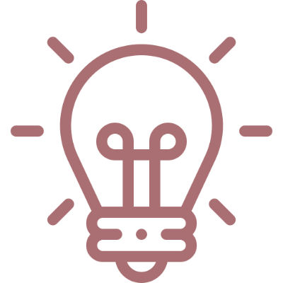
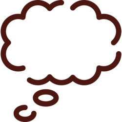

About The Project

This is a project made with HTML, CSS, JS, and a little bit of coffee.
I made it for beginners in CSS, and I decided to do this because years ago, I wished I had a playful way to study like this.
But it's important to say that I’m still a student, and there might be some mistakes (I will be happy if you give feedback in case you find anything strange in the code).
I really hope this project evolves in the near future, getting even better and cuter.